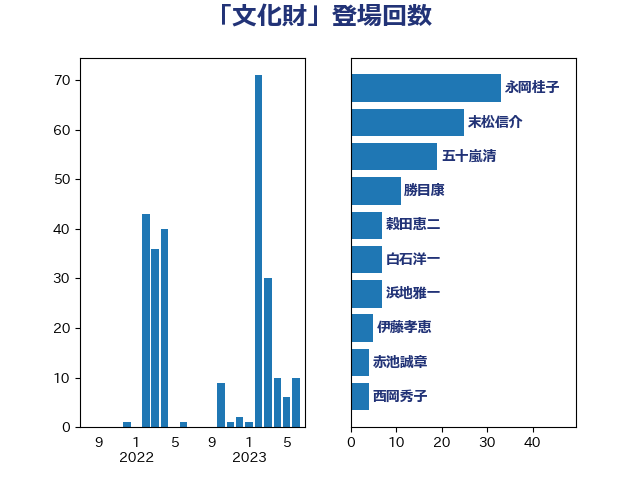

単語「文化財」

| 萩生田光一 | 自由民主党 | 119 回 |
| 横沢高徳 | 立憲民主党 | 58 回 |
| 末松信介 | 自由民主党 | 25 回 |
| 浮島智子 | 公明党 | 20 回 |
| 吉川ゆうみ | 自由民主党 | 19 回 |
| 安江伸夫 | 公明党 | 16 回 |
| 舩後靖彦 | れいわ新選組 | 13 回 |
| 秋野公造 | 公明党 | 12 回 |
| 谷田川元 | 立憲民主党 | 12 回 |
| 勝目康 | 自由民主党 | 7 回 |
| 吉良州司 | 無所属 | 7 回 |
| 白石洋一 | 立憲民主党 | 7 回 |
| 穀田恵二 | 日本共産党 | 7 回 |
| 伊藤孝恵 | 国民民主党 | 6 回 |
| 梅村みずほ | 日本維新の会 | 5 回 |
| 太田房江 | 自由民主党 | 4 回 |
| 池田佳隆 | 自由民主党 | 4 回 |
| 西岡秀子 | 国民民主党 | 4 回 |
| 上野通子 | 自由民主党 | 3 回 |
| 美延映夫 | 日本維新の会 | 3 回 |
| 三ッ林裕巳 | 自由民主党 | 2 回 |
| 丹羽秀樹 | 自由民主党 | 2 回 |
| 井上哲士 | 日本共産党 | 2 回 |
| 務台俊介 | 自由民主党 | 2 回 |
| 山本左近 | 自由民主党 | 2 回 |
| 芳賀道也 | 国民民主党 | 2 回 |
| 菅義偉 | 自由民主党 | 2 回 |
| 菊田真紀子 | 立憲民主党 | 2 回 |
| 高橋千鶴子 | 日本共産党 | 2 回 |
| 鰐淵洋子 | 公明党 | 2 回 |
| 三谷英弘 | 自由民主党 | 1 回 |
| 中西健治 | 自由民主党 | 1 回 |
| 伊波洋一 | 無所属 | 1 回 |
| 古川直季 | 自由民主党 | 1 回 |
| 吉良よし子 | 日本共産党 | 1 回 |
| 城井崇 | 立憲民主党 | 1 回 |
| 山谷えり子 | 自由民主党 | 1 回 |
| 岬麻紀 | 日本維新の会 | 1 回 |
| 御法川信英 | 自由民主党 | 1 回 |
| 橘慶一郎 | 自由民主党 | 1 回 |
| 浜田聡 | NHK党 | 1 回 |
| 笹川博義 | 自由民主党 | 1 回 |
| 緑川貴士 | 立憲民主党 | 1 回 |
| 舟山康江 | 国民民主党 | 1 回 |
| 赤嶺政賢 | 日本共産党 | 1 回 |
| 青山周平 | 自由民主党 | 1 回 |
| 高木啓 | 自由民主党 | 1 回 |